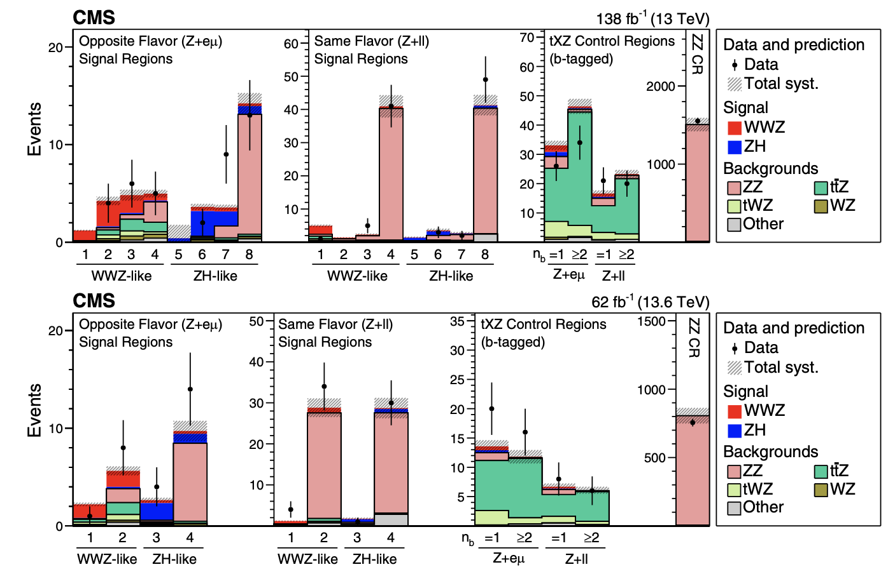

December 9, 2025
Dr. Kelci Mohrman presented an update on VBS VVH analysis at CMS Week Seoul


We investigate rare processes in the electroweak sectors to search for signs of new physics, while developing next-generation computational tools to accelerate discovery.
Affiliation • Department of Physics • University of Florida

Our lab explores the frontiers of particle physics and advanced computing at the CMS experiment of CERN’s LHC. We analyze rare processes involving the W, Z, and Higgs boson, namely the electroweak sectors, to test the Standard Model and search for new physics. In parallel, we develop GPU-accelerated software and scalable workflows that make high-throughput analysis fast and accessible.
We value open science, mentorship, and collaboration—students and postdocs lead projects that blend analysis, methods, and computing to push discovery forward.
Dr. Kelci Mohrman presented an update on VBS VVH analysis at CMS Week Seoul
Matthew Dittrich presented poster on WWZ measurement at CMS Week Seoul

Dr. Eslam Zenhom successfully defends his Ph.D. thesis on A Semi-Merged All-Hadronic Search for Anomalous C2V Couplings in VVH Production

Dr. Kelci Mohrman presented at Multi-Boson Interaction Workshop 2025 at Brandeis Univ. on Measurement of WWZ and ZH production at 13 and 13.6 TeV

Prof. Philip Chang presented at Multi-Boson Interaction Workshop 2025 at Brandeis Univ. on Triboson Physics

Amilqar Karam presented poster at CPAD 2025 at UPenn on Tracklet Classification with Distilled Graph Neural Network on FPGA

Muon colliders offer a unique path toward multi-TeV lepton collisions with clean experimental signatures and direct sensitivity to new physics. We explore simulation strategies, detector concepts, and physics potential — ranging from precision Higgs measurements to searches for Beyond the Standard Model phenomena.
Learn more about the Muon Collider →Muon colliders offer a unique path toward multi-TeV lepton collisions with clean experimental signatures and direct sensitivity to new physics. We explore simulation strategies, detector concepts, and physics potential — ranging from precision Higgs measurements to searches for Beyond the Standard Model phenomena.
Learn more about the Muon Collider →The quartic couplings between two Higgs bosons and vector bosons (HHWW and HHZZ) remain among the least constrained in the Higgs sector. This CMS study presents the first direct search for production of a Higgs boson in association with two vector bosons via vector boson scattering (VBS), using 138 fb⁻¹ of 13 TeV data. It sets the most stringent limits yet on the VVHH (κ₂V) coupling relative to the SM and independently constrains the HHWW (κ₂W) and HHZZ (κ₂Z) quartic couplings—marking a significant advance in our ability to probe Higgs self-interactions at the LHC.
View the CMS preliminary result →The quartic couplings between two Higgs bosons and vector bosons (HHWW and HHZZ) remain among the least constrained in the Higgs sector. This CMS study presents the first direct search for production of a Higgs boson in association with two vector bosons via vector boson scattering (VBS), using 138 fb⁻¹ of 13 TeV data. It sets the most stringent limits yet on the VVHH (κ₂V) coupling relative to the SM and independently constrains the HHWW (κ₂W) and HHZZ (κ₂Z) quartic couplings—marking a significant advance in our ability to probe Higgs self-interactions at the LHC.
View the CMS preliminary result →We led the study of first simultaneous measurement of nonresonant WWZ and ZH (H→WW) production at √s = 13 and 13.6 TeV. This study delivered the most precise determination of the WWZ cross section to date and provided the first evidence for triboson production at 13.6 TeV. These results are a critical milestone in testing the Standard Model’s self-consistency and probing the dynamics of multi-boson interactions, which are uniquely sensitive to subtle effects from new physics at higher scales.
 Read the publication →We led the study of first simultaneous measurement of nonresonant WWZ and ZH (H→WW) production at √s = 13 and 13.6 TeV. This study delivered the most precise determination of the WWZ cross section to date and provided the first evidence for triboson production at 13.6 TeV. These results are a critical milestone in testing the Standard Model’s self-consistency and probing the dynamics of multi-boson interactions, which are uniquely sensitive to subtle effects from new physics at higher scales.
Read the publication →We led the study of first simultaneous measurement of nonresonant WWZ and ZH (H→WW) production at √s = 13 and 13.6 TeV. This study delivered the most precise determination of the WWZ cross section to date and provided the first evidence for triboson production at 13.6 TeV. These results are a critical milestone in testing the Standard Model’s self-consistency and probing the dynamics of multi-boson interactions, which are uniquely sensitive to subtle effects from new physics at higher scales.
Read the publication →We led the study of first simultaneous measurement of nonresonant WWZ and ZH (H→WW) production at √s = 13 and 13.6 TeV. This study delivered the most precise determination of the WWZ cross section to date and provided the first evidence for triboson production at 13.6 TeV. These results are a critical milestone in testing the Standard Model’s self-consistency and probing the dynamics of multi-boson interactions, which are uniquely sensitive to subtle effects from new physics at higher scales.
Read the publication →The simultaneous production of three massive gauge bosons (VVV with V = W, Z) is an extremely rare phenomenon predicted by the Standard Model of particle physics. Observing such events provides a direct window into the self-interactions of the electroweak force, one of the least tested aspects of the theory. The first observation of VVV production, including evidence for WWW and evidence for WWZ, marks a significant milestone: it confirms a key prediction of the Standard Model and opens a new triboson physics program at the LHC. These measurements will enable increasingly precise studies of multi-boson dynamics and offer sensitivity to subtle effects of new physics at higher energy scales.
 Read the publication →
Read the publication →
The simultaneous production of three massive gauge bosons (VVV with V = W, Z) is an extremely rare phenomenon predicted by the Standard Model of particle physics. Observing such events provides a direct window into the self-interactions of the electroweak force, one of the least tested aspects of the theory. The first observation of VVV production, including evidence for WWW and evidence for WWZ, marks a significant milestone: it confirms a key prediction of the Standard Model and opens a new triboson physics program at the LHC. These measurements will enable increasingly precise studies of multi-boson dynamics and offer sensitivity to subtle effects of new physics at higher energy scales.
Read the publication →
The High-Luminosity LHC will deliver an unprecedented volume of collision data, demanding new approaches to charged-particle tracking. The Line Segment Tracking algorithm is a highly parallelizable method designed to run efficiently on modern architectures such as GPUs. By reconstructing tracks from short, local segments, LST dramatically reduces combinatorial complexity, enabling fast and scalable track finding in high-pileup environments. This development is central to ensuring that the full discovery potential of the HL-LHC can be realized.
Read the publication →The High-Luminosity LHC will deliver an unprecedented volume of collision data, demanding new approaches to charged-particle tracking. The Line Segment Tracking algorithm is a highly parallelizable method designed to run efficiently on modern architectures such as GPUs. By reconstructing tracks from short, local segments, LST dramatically reduces combinatorial complexity, enabling fast and scalable track finding in high-pileup environments. This development is central to ensuring that the full discovery potential of the HL-LHC can be realized.
Read the publication →The production of three W bosons (WWW) is one of the rarest processes predicted by the Standard Model, providing a sensitive window into the structure of quartic electroweak gauge couplings and the dynamics of multi-boson interactions. Studying this channel tests the self-interactions of the weak force in extreme conditions and offers a pathway to uncover deviations that could signal new physics. In addition to probing the Standard Model, the analysis also set the first experimental limits on photophobic axion-like particle models, expanding the search for new phenomena beyond the electroweak sector.
Read the publication →The production of three W bosons (WWW) is one of the rarest processes predicted by the Standard Model, providing a sensitive window into the structure of quartic electroweak gauge couplings and the dynamics of multi-boson interactions. Studying this channel tests the self-interactions of the weak force in extreme conditions and offers a pathway to uncover deviations that could signal new physics. In addition to probing the Standard Model, the analysis also set the first experimental limits on photophobic axion-like particle models, expanding the search for new phenomena beyond the electroweak sector.
Read the publication →The Higgs boson, discovered in 2012, plays a central role in explaining how fundamental particles acquire mass. One of the most important ways to study its properties is through its decay into a pair of W bosons (H → WW*). Observations in this channel provided some of the earliest and most precise tests of the Higgs mechanism, including the first evidence for vector boson fusion production of the Higgs boson. These measurements placed strong constraints on the Higgs boson’s Yukawa coupling strength, sharpening our understanding of its interaction with other particles. In addition, searches for an extended Higgs sector through the WW decay mode explored possible links between the Higgs boson and dark matter, highlighting its potential as a tool to probe new physics.
The Higgs boson, discovered in 2012, plays a central role in explaining how fundamental particles acquire mass. One of the most important ways to study its properties is through its decay into a pair of W bosons (H → WW*). Observations in this channel provided some of the earliest and most precise tests of the Higgs mechanism, including the first evidence for vector boson fusion production of the Higgs boson. These measurements placed strong constraints on the Higgs boson’s Yukawa coupling strength, sharpening our understanding of its interaction with other particles. In addition, searches for an extended Higgs sector through the WW decay mode explored possible links between the Higgs boson and dark matter, highlighting its potential as a tool to probe new physics.
Media coverage on the physics potential and challenges of building a future muon collider.
CMS article on the first observation of triboson production at the LHC, probing electroweak self-interactions at unprecedented energies.


Coverage of triboson production and what it reveals about electroweak self-interactions and rare multi-boson dynamics.
These articles highlight the first clear observation of the Higgs boson decaying to two W bosons, a milestone that tests the Higgs mechanism and refines our understanding of its couplings.

Particle Fever — Science on Screen, Dec 2022, Enzian Theater, Maitland FL
Email: p dot chang at ufl dot edu
Address: New Physics Building 2035, Department of Physics, University of Florida, Gainesville, FL 32603